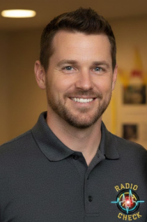
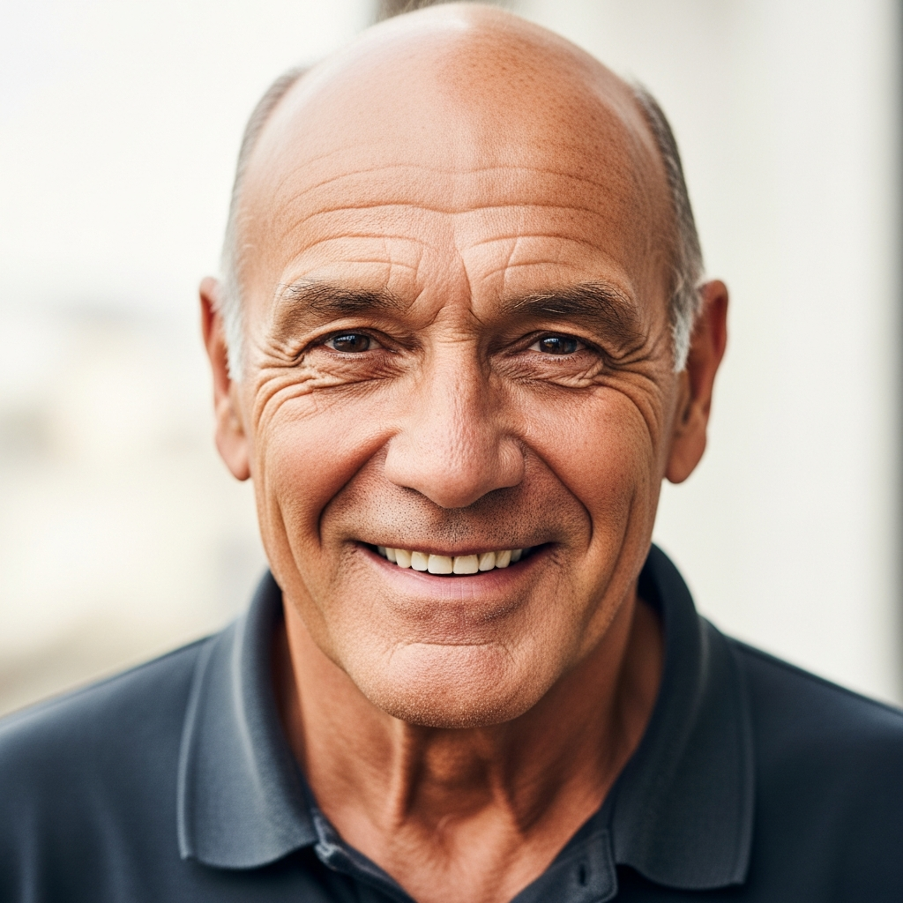
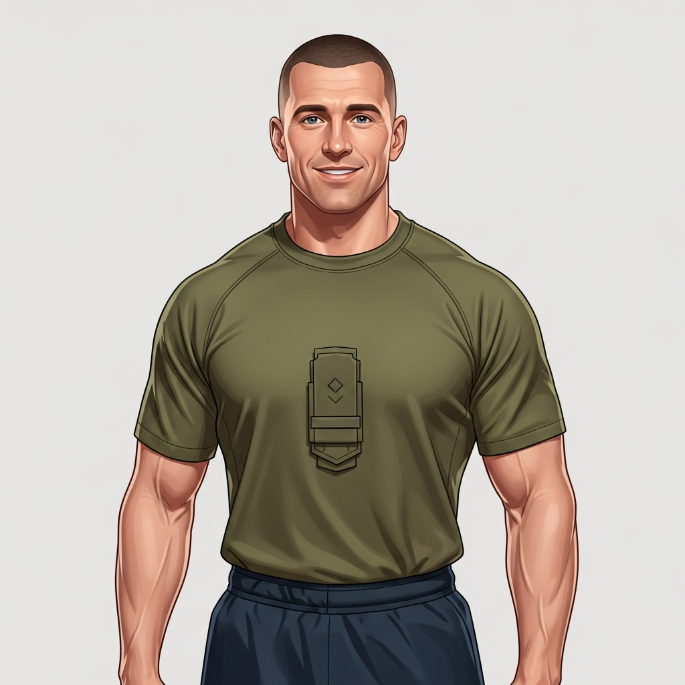
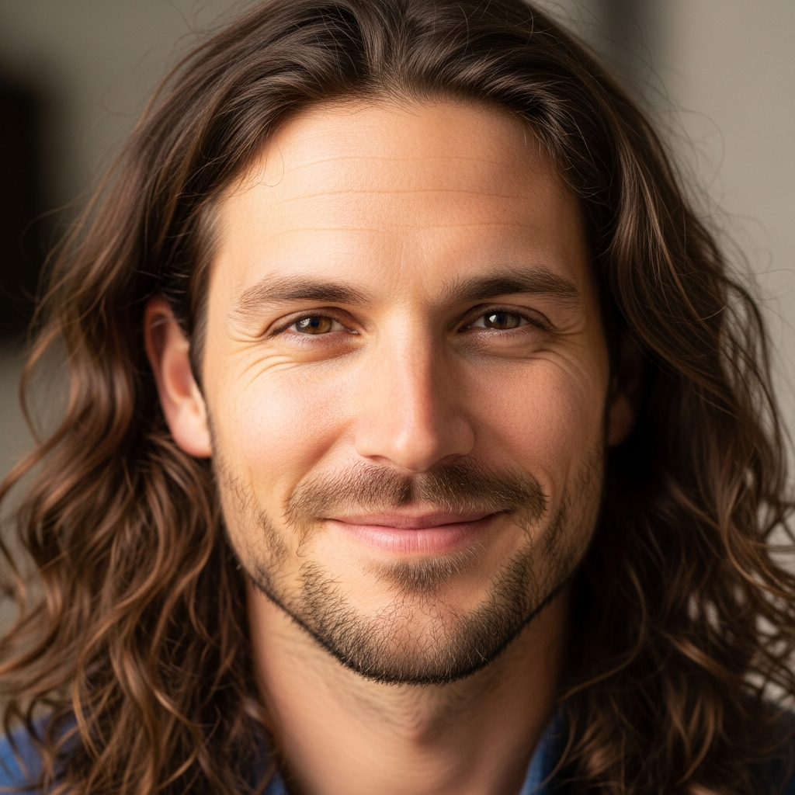
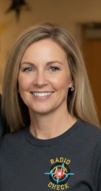
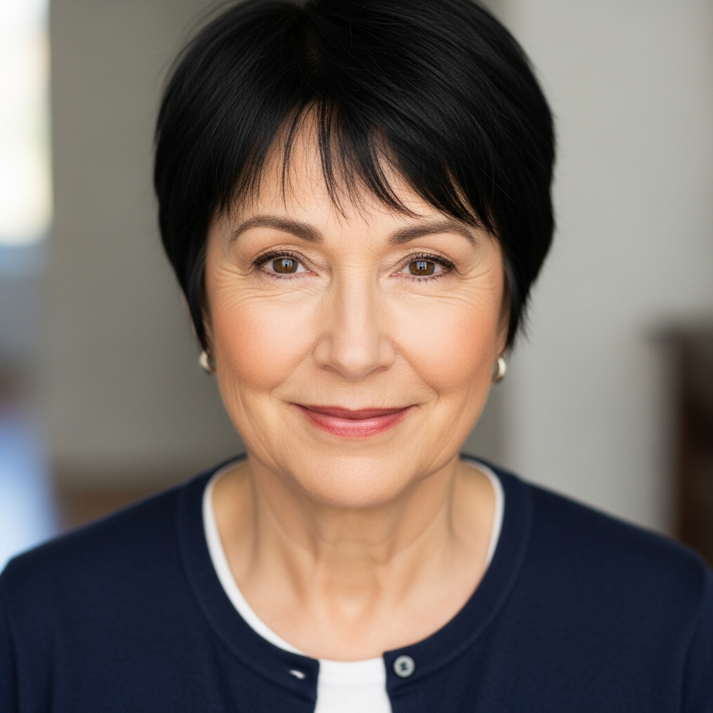
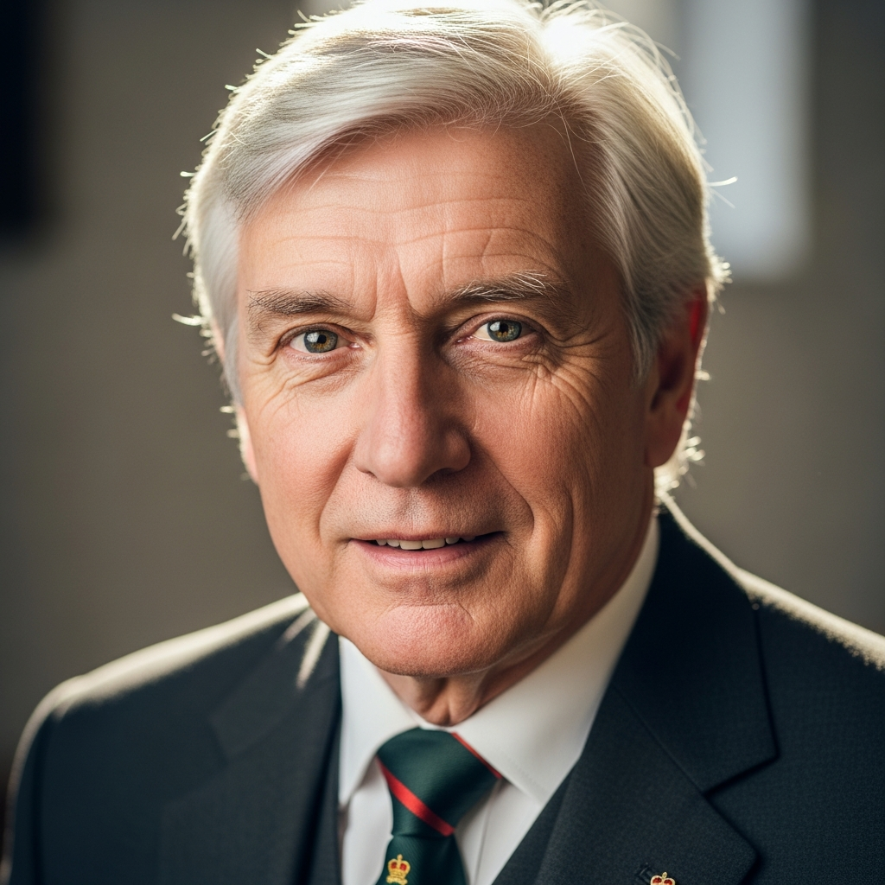

Our Founders
The team dedicated to supporting the Armed Forces community

Andrew "Frankie" Dunn
FounderAndrew Dunn served 27 years in the British Army before creating Frankie's Pod. Through podcasting and Radio Check, he builds communities where veterans can connect and support each other.
Click to read more
Rachel Webster
FounderRachel brings compassion and clinical expertise to Radio Check. With a background in mental health support, she has dedicated her career to helping those who have served.
Click to read more
Anthony Donnelly
FounderAnthony is the founder of Zentrafuge Labs, an AI safety initiative focused on building continuity-based AI systems for high-trust environments.
Click to read moreOur AI Battle Buddies are available 24/7 when you need someone to talk to. Each has their own personality and speciality.

Tommy
Your Battle BuddyTommy is your friendly, down-to-earth companion. Great for everyday chats and providing a supportive ear. Tommy understands military culture and speaks your language.
Rachel
Criminal Justice SupportRachel provides warm, non-judgemental support for veterans in or leaving the criminal justice system. No judgement, just understanding.

Bob
Ex-Para Peer SupportBob is your no-nonsense mate who's been there and done it. Military banter, practical advice, straight-talking support.

Frankie
PTI & Fitness CoachYour AI Physical Training Instructor with a 12-week fitness programme. Military-style PT to build strength and resilience.

Hugo
Services NavigatorHugo helps navigate support services - housing, employment, benefits, healthcare, charities. He knows where to point you.

Margie
Addiction SupportMargie is here for conversations about alcohol, drugs, gambling. Non-judgmental space, harm reduction info, specialist support.

Rita
Family SupportRita supports families of serving personnel and veterans. Deployment, transition, communication - she understands military families.
Catherine
Thoughtful SupportCatherine offers calm, intelligent support for deeper conversations. Working through complex thoughts and gaining perspective.

Finch
Legal InformationFinch provides legal information for service personnel and veterans. Service complaints to civilian issues - pointing you to the right resources.
Important Information
Our AI Battle Buddies provide supportive conversation and a listening ear 24/7. However, they are not qualified therapists, cannot diagnose conditions, and are not a replacement for professional care.
In a crisis? Call 999 for immediate danger. Samaritans: 116 123 (free, 24/7). Combat Stress: 0800 138 1619.